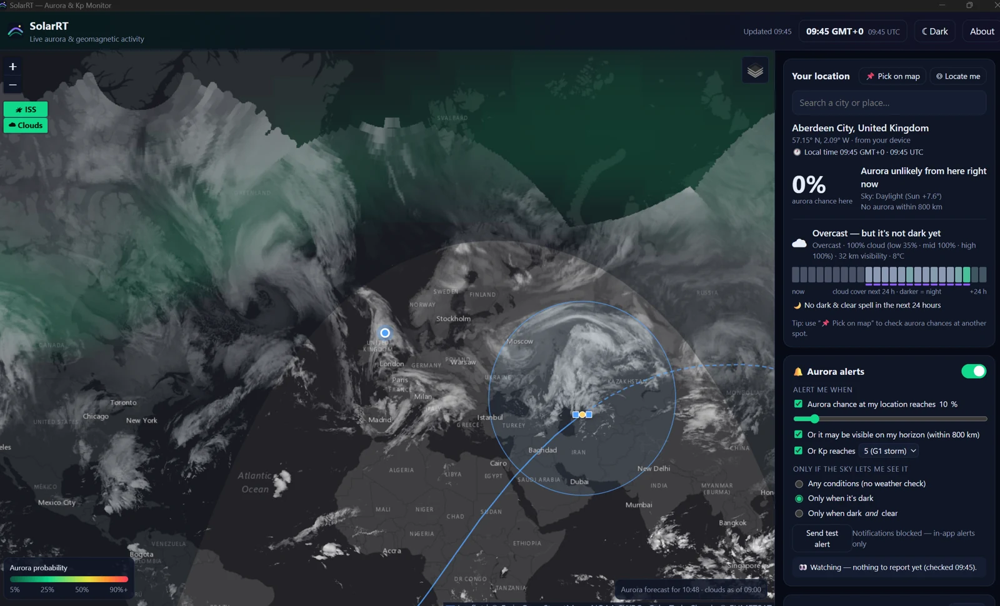
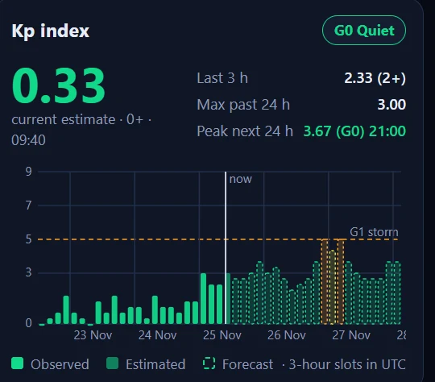
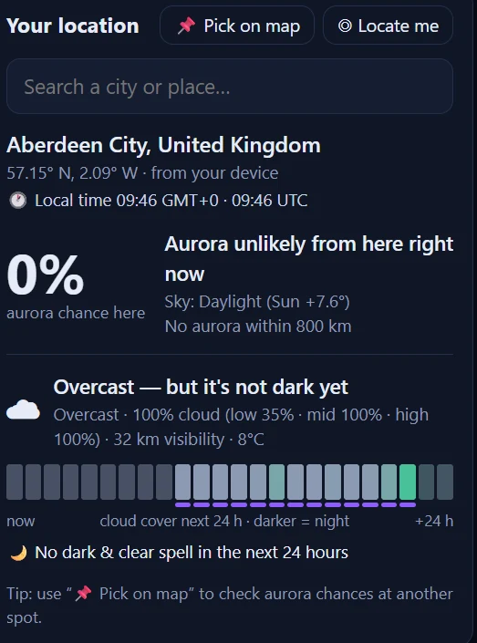
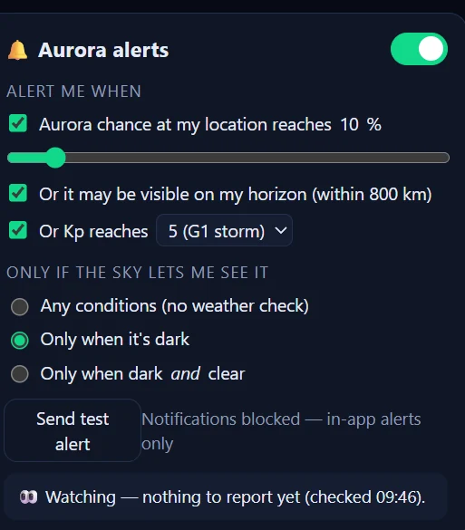
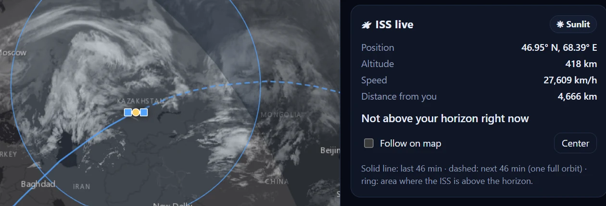
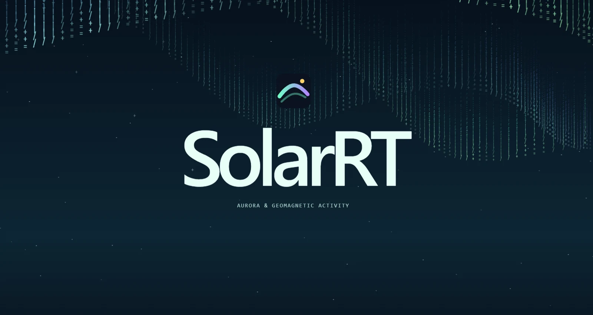

SolarRT: A Little Closer to the Skies
Solar RT (Solar Real Time) by S. Debnath. Building a free web application for live aurora forecasts, space weather monitoring and International Space Station tracking.
In 2024, while studying planetary science at the University of Aberdeen, I started working on a small Python application to monitor solar and geomagnetic activity. Two years later, at nearly three in the morning on 25 November 2026, I finally launched its first web version. I call it SolarRT (Solar Real Time).
With my background in electronics and communication engineering and planetary science, I have developed a particular interest in space weather and the electromagnetic environment of our planet. During my master’s, I worked on building a scientific instrument to measure Schumann resonances, the Earth-ionosphere cavity's natural electromagnetic resonances. Living in Scotland also gave me an opportunity to appreciate the Northern Lights and develop a greater interest in the science behind them.
Several really good websites and applications already monitor auroras, including Glendale and Aurora Alert, which are available for free. The idea behind SolarRT was simply to build my own application. I was curious about how these scientific datasets could be brought together, how aurora forecasts could be interpreted for a particular location and how I could present all this information through a single interface.

What is SolarRT?
SolarRT is a free web application for monitoring auroral activity, geomagnetic conditions, and local weather, along with a live tracker for the International Space Station (ISS). The application is accessible through a web browser and requires no account.
One of the things I wanted to address while developing SolarRT was the difference between an aurora forecast and the actual possibility of observing an aurora from a particular location. A strong geomagnetic storm may produce favourable conditions, but factors such as cloud cover, daylight and the geographical position of the auroral oval can determine whether you see anything at all. This is particularly relevant in Scotland, where the weather does not always cooperate.
The main interface uses NOAA’s OVATION aurora forecasting model to visualise the geographical distribution of auroral activity. Alongside the map, users can monitor the planetary Kp index, which describes disturbances in Earth’s magnetic field on a scale from 0 to 9. A Kp value of 5 or above corresponds to geomagnetic storm conditions, although a higher Kp value alone does not guarantee that an aurora will be visible from your location.

The application distinguishes between the probability of auroral activity directly overhead and the possibility of seeing an aurora towards the horizon. An observer may be several hundred kilometres from the auroral oval and still see an aurora under favourable conditions.
Can I see the Northern Lights tonight?
Suppose you are in Aberdeen and the forecast calls for a geomagnetic storm later in the evening. You can open SolarRT, select Aberdeen as your location and check the predicted auroral activity, the Kp forecast and the local weather conditions. You can also select other locations directly on the map, which could be useful if you are planning to travel somewhere with clearer skies.
The weather section uses data from Open-Meteo to display local cloud cover, atmospheric visibility and periods of darkness. It also includes a satellite cloud imagery layer from EUMETSAT, allowing users to explore atmospheric conditions over a much larger geographical area.

The screenshot above is a good example of why local weather matters. At the time it was captured, Aberdeen was experiencing daylight and 100% cloud cover, with no predicted dark, clear period in the following 24 hours. Having access to this information alongside the aurora forecast helps put the space weather data into context.
I have also included a customisable alert system. Users can set their preferred aurora probability or Kp threshold and choose whether they want to receive notifications only when it is dark or when the skies are sufficiently clear. Currently, the application must remain open for alerts to work, which I would like to improve in future versions.

I think this could be particularly useful for people interested in astrophotography, amateur astronomy or anyone travelling to northern regions hoping to see the aurora. Space weather forecasts are inherently uncertain, so treat the information as a guide when planning observations.
Live International Space Station tracking
Another feature I wanted to include was live tracking of the International Space Station. Using orbital data from CelesTrak and the SGP4 orbital propagation model, the application calculates the ISS position and displays its recent and predicted orbital trajectory.
You can follow the ISS on the map and check its altitude, speed and distance from your location. The application also displays the geographical region from which the ISS is above the horizon and indicates whether the station is currently sunlit. Under suitable lighting conditions, you can observe the station with the naked eye, usually shortly after sunset or before sunrise.

I have always found it fascinating that a small point of light moving across the night sky can be a spacecraft carrying people around the Earth at approximately 28,000 kilometres per hour.
The experience of building SolarRT
Developing SolarRT has been a big learning experience for me, especially in web development and deployment. My previous projects have largely revolved around electronics, scientific instrumentation, and data analysis, so building an application that others could access introduced me to several unfamiliar technologies.
I had never used Cloudflare before, and getting the application online took much longer than I expected. With the help of OpenAI Codex, I spent time understanding the deployment environment, debugging errors and making the necessary modifications to get everything running. It was quite satisfying to finally open the website and realise that something I had been working on could now be accessed by anyone.
Where does the scientific data come from?
SolarRT uses several publicly available data sources and services:
- NOAA Space Weather Prediction Center for aurora forecasts and geomagnetic activity.
- Open-Meteo for local atmospheric and weather forecasts.
- EUMETSAT for satellite-derived cloud imagery.
- CelesTrak for orbital data.
- OpenStreetMap and Esri for geographic information and mapping.
A considerable amount of scientific information is freely available, and part of what motivated me throughout this project was exploring what we could build with these resources.
What I would like to do next
SolarRT is still in its first public version. I would like to experiment further with solar wind measurements, historical geomagnetic data and the relationship between auroral activity and local observing conditions. Integrating light pollution data and lunar illumination would also be interesting additions, particularly for people who use the application for astrophotography.
At some point, I would like to explore whether historical observations of auroras could help develop and evaluate a more detailed model for local visibility. That would be an interesting research project in itself.
For now, I would love for people to try the application and tell me what they think. I have included a small feedback section at the bottom of the website where you can report bugs, suggest features or share your experience. I am sure there are things we can do better, and I am looking forward to working on them.
SolarRT is available for free at:

Thank you for reading, and clear skies!
Sankha Subhra Debnath